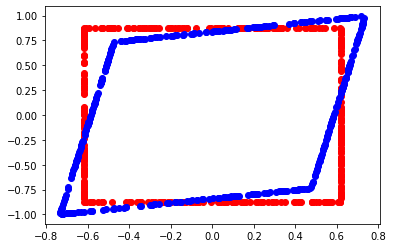
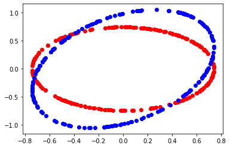
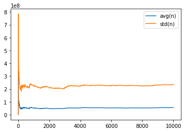
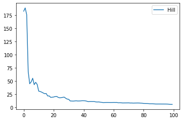
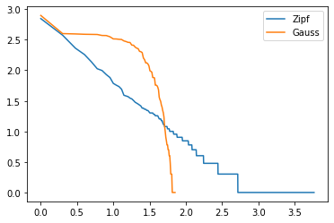

p-values#
Compute p-values and heavy tails estimators.
[1]:
from jyquickhelper import add_notebook_menu
add_notebook_menu()
[1]:
[2]:
%matplotlib inline
p-value table#
[3]:
from scipy.stats import norm
import pandas
from pandas import DataFrame
import numpy
def pvalue(p, q, N):
theta = abs(p - q)
var = p * (1 - p)
bn = (2 * N) ** 0.5 * theta / var**0.5
ret = (1 - norm.cdf(bn)) * 2
return ret
def pvalue_N(p, q, alpha):
theta = abs(p - q)
var = p * (1 - p)
rev = abs(norm.ppf(alpha / 2))
N = 2 * (rev * var**0.5 / theta) ** 2
return int(N + 1)
def alphatable(ps, dps, alpha):
values = []
for p in ps:
row = []
for dp in dps:
q = p + dp
r = pvalue_N(p, q, alpha) if 1 >= q >= 0 else numpy.nan
row.append(r)
values.append(row)
return values
def dataframe(ps, dps, table):
columns = dps
df = pandas.DataFrame(data=table, index=ps)
df.columns = dps
return df
print("norm.ppf(0.025)", norm.ppf(0.025)) # -1.9599639845400545
ps = [0.001, 0.002] + [0.05 * i for i in range(1, 20)]
dps = [
-0.2,
-0.1,
-0.02,
-0.01,
-0.002,
-0.001,
0.2,
0.1,
0.02,
0.01,
0.002,
0.001,
]
dps.sort()
t = alphatable(ps, dps, 0.05)
dataframe(ps, dps, t)
norm.ppf(0.025) -1.9599639845400545
[3]:
| -0.200 | -0.100 | -0.020 | -0.010 | -0.002 | -0.001 | 0.001 | 0.002 | 0.010 | 0.020 | 0.100 | 0.200 | |
|---|---|---|---|---|---|---|---|---|---|---|---|---|
| 0.001 | NaN | NaN | NaN | NaN | NaN | 7676 | 7676 | 1919 | 77 | 20 | 1.0 | 1.0 |
| 0.002 | NaN | NaN | NaN | NaN | 3834.0 | 15336 | 15336 | 3834 | 154 | 39 | 2.0 | 1.0 |
| 0.050 | NaN | NaN | 913.0 | 3650.0 | 91235.0 | 364939 | 364939 | 91235 | 3650 | 913 | 37.0 | 10.0 |
| 0.100 | NaN | 70.0 | 1729.0 | 6915.0 | 172866.0 | 691463 | 691463 | 172866 | 6915 | 1729 | 70.0 | 18.0 |
| 0.150 | NaN | 98.0 | 2449.0 | 9796.0 | 244893.0 | 979572 | 979572 | 244893 | 9796 | 2449 | 98.0 | 25.0 |
| 0.200 | 31.0 | 123.0 | 3074.0 | 12293.0 | 307317.0 | 1229267 | 1229267 | 307317 | 12293 | 3074 | 123.0 | 31.0 |
| 0.250 | 37.0 | 145.0 | 3602.0 | 14406.0 | 360137.0 | 1440548 | 1440548 | 360137 | 14406 | 3602 | 145.0 | 37.0 |
| 0.300 | 41.0 | 162.0 | 4034.0 | 16135.0 | 403354.0 | 1613413 | 1613413 | 403354 | 16135 | 4034 | 162.0 | 41.0 |
| 0.350 | 44.0 | 175.0 | 4370.0 | 17479.0 | 436966.0 | 1747864 | 1747864 | 436966 | 17479 | 4370 | 175.0 | 44.0 |
| 0.400 | 47.0 | 185.0 | 4610.0 | 18440.0 | 460976.0 | 1843901 | 1843901 | 460976 | 18440 | 4610 | 185.0 | 47.0 |
| 0.450 | 48.0 | 191.0 | 4754.0 | 19016.0 | 475381.0 | 1901523 | 1901523 | 475381 | 19016 | 4754 | 191.0 | 48.0 |
| 0.500 | 49.0 | 193.0 | 4802.0 | 19208.0 | 480183.0 | 1920730 | 1920730 | 480183 | 19208 | 4802 | 193.0 | 49.0 |
| 0.550 | 48.0 | 191.0 | 4754.0 | 19016.0 | 475381.0 | 1901523 | 1901523 | 475381 | 19016 | 4754 | 191.0 | 48.0 |
| 0.600 | 47.0 | 185.0 | 4610.0 | 18440.0 | 460976.0 | 1843901 | 1843901 | 460976 | 18440 | 4610 | 185.0 | 47.0 |
| 0.650 | 44.0 | 175.0 | 4370.0 | 17479.0 | 436966.0 | 1747864 | 1747864 | 436966 | 17479 | 4370 | 175.0 | 44.0 |
| 0.700 | 41.0 | 162.0 | 4034.0 | 16135.0 | 403354.0 | 1613413 | 1613413 | 403354 | 16135 | 4034 | 162.0 | 41.0 |
| 0.750 | 37.0 | 145.0 | 3602.0 | 14406.0 | 360137.0 | 1440548 | 1440548 | 360137 | 14406 | 3602 | 145.0 | 37.0 |
| 0.800 | 31.0 | 123.0 | 3074.0 | 12293.0 | 307317.0 | 1229267 | 1229267 | 307317 | 12293 | 3074 | 123.0 | 31.0 |
| 0.850 | 25.0 | 98.0 | 2449.0 | 9796.0 | 244893.0 | 979572 | 979572 | 244893 | 9796 | 2449 | 98.0 | NaN |
| 0.900 | 18.0 | 70.0 | 1729.0 | 6915.0 | 172866.0 | 691463 | 691463 | 172866 | 6915 | 1729 | 70.0 | NaN |
| 0.950 | 10.0 | 37.0 | 913.0 | 3650.0 | 91235.0 | 364939 | 364939 | 91235 | 3650 | 913 | NaN | NaN |
p-values in 2D#
[4]:
import numpy, matplotlib, random, math
import matplotlib.pyplot as pylab
def matrix_square_root(sigma):
eigen, vect = numpy.linalg.eig(sigma)
dim = len(sigma)
res = numpy.identity(dim)
for i in range(0, dim):
res[i, i] = eigen[i] ** 0.5
return vect * res * vect.transpose()
def chi2_level(alpha=0.95):
N = 1000
x = [random.gauss(0, 1) for _ in range(0, N)]
y = [random.gauss(0, 1) for _ in range(0, N)]
r = map(lambda c: (c[0] ** 2 + c[1] ** 2) ** 0.5, zip(x, y))
r = list(r)
r.sort()
res = r[int(alpha * N)]
return res
def square_figure(mat, a):
x = []
y = []
for i in range(0, 100):
x.append(a * mat[0][0] ** 0.5)
y.append((random.random() - 0.5) * a * mat[1][1] ** 0.5 * 2)
x.append(-a * mat[0][0] ** 0.5)
y.append((random.random() - 0.5) * a * mat[1][1] ** 0.5 * 2)
y.append(a * mat[1][1] ** 0.5)
x.append((random.random() - 0.5) * a * mat[0][0] ** 0.5 * 2)
y.append(-a * mat[1][1] ** 0.5)
x.append((random.random() - 0.5) * a * mat[0][0] ** 0.5 * 2)
pylab.plot(x, y, "ro")
x = []
y = []
for i in range(0, 100):
x.append(a)
y.append((random.random() - 0.5) * a * 2)
x.append(-a)
y.append((random.random() - 0.5) * a * 2)
y.append(a)
x.append((random.random() - 0.5) * a * 2)
y.append(-a)
x.append((random.random() - 0.5) * a * 2)
xs, ys = [], []
for a, b in zip(x, y):
ar = numpy.matrix([[a], [b]]).transpose()
we = ar * root
xs.append(we[0, 0])
ys.append(we[0, 1])
pylab.plot(xs, ys, "bo")
pylab.show()
def circle_figure(mat, a):
x = []
y = []
for i in range(0, 200):
z = random.random() * math.pi * 2
i = a * mat[0][0] ** 0.5 * math.cos(z)
j = a * mat[0][0] ** 0.5 * math.sin(z)
x.append(i)
y.append(j)
pylab.plot(x, y, "ro")
x = []
y = []
for i in range(0, 200):
z = random.random() * math.pi * 2
i = a * math.cos(z)
j = a * math.sin(z)
x.append(i)
y.append(j)
xs, ys = [], []
for a, b in zip(x, y):
ar = numpy.matrix([[a], [b]]).transpose()
we = ar * root
xs.append(we[0, 0])
ys.append(we[0, 1])
pylab.plot(xs, ys, "bo")
pylab.show()
level = chi2_level()
mat = [[0.1, 0.05], [0.05, 0.2]]
npmat = numpy.matrix(mat)
root = matrix_square_root(npmat)
square_figure(mat, 1.96)
circle_figure(mat, level)


p-value ratio#
[5]:
import random, math
def densite_gauss(mu, sigma, x):
e = -((x - mu) ** 2) / (sigma**2 * 2)
d = 1.0 / ((2 * math.pi) ** 0.5 * sigma)
return d * math.exp(e)
def simulation_vector(N, mu, sigma):
return [random.gauss(mu, sigma) for n in range(N)]
def ratio(vector, x, fdensite):
under = 0
above = 0
fx = fdensite(x)
for u in vector:
f = fdensite(u)
if f >= fx:
above += 1
else:
under += 1
return float(above) / float(above + under)
x = 1.96
N = 10000
mu = 0
sigma = 1
v = simulation_vector(N, mu, sigma)
g = ratio(v, x, lambda y: densite_gauss(mu, sigma, y))
print(g)
0.9487
p-values and EM#
See Applying the EM Algorithm: Binomial Mixtures.
[6]:
from scipy.stats import norm
import random, math
def average_std_deviation(sample):
mean = 0.0
var = 0.0
for x in sample:
mean += x
var += x * x
mean /= len(sample)
var /= len(sample)
var -= mean * mean
return mean, var**0.5
def bootsample(sample):
n = len(sample) - 1
return [sample[random.randint(0, n)] for _ in sample]
def bootstrap_difference(sampleX, sampleY, draws=2000, confidence=0.05):
diff = []
for n in range(0, draws):
if n % 1000 == 0:
print(n)
sx = bootsample(sampleX)
sy = bootsample(sampleY)
px = sum(sx) * 1.0 / len(sx)
py = sum(sy) * 1.0 / len(sy)
diff.append(px - py)
diff.sort()
n = int(len(diff) * confidence / 2)
av = sum(diff) / len(diff)
return av, diff[n], diff[len(diff) - n]
# generation of a sample
def generate_obs(p):
x = random.random()
if x <= p:
return 1
else:
return 0
def generate_n_obs(p, n):
return [generate_obs(p) for i in range(0, n)]
# std deviation
def diff_std_deviation(px, py):
s = px * (1 - px) + py * (1 - py)
return px, py, s**0.5
def pvalue(diff, std, N):
theta = abs(diff)
bn = (2 * N) ** 0.5 * theta / std
pv = (1 - norm.cdf(bn)) * 2
return pv
def omega_i(X, pi, p, q):
np = p * pi if X == 1 else (1 - p) * pi
nq = q * (1 - pi) if X == 1 else (1 - q) * (1 - pi)
return np / (np + nq)
def likelihood(X, pi, p, q):
np = p * pi if X == 1 else (1 - p) * pi
nq = q * (1 - pi) if X == 1 else (1 - q) * (1 - pi)
return math.log(np) + math.log(nq)
def algoEM(sample):
p = random.random()
q = random.random()
pi = random.random()
iter = 0
while iter < 10:
lk = sum([likelihood(x, pi, p, q) for x in sample])
wi = [omega_i(x, pi, p, q) for x in sample]
sw = sum(wi)
pin = sum(wi) / len(wi)
pn = sum([x * w for x, w in zip(sample, wi)]) / sw
qn = sum([x * (1 - w) for x, w in zip(sample, wi)]) / (len(wi) - sw)
pi, p, q = pin, pn, qn
iter += 1
lk = sum([likelihood(x, pi, p, q) for x in sample])
return pi, p, q, lk
# mix
p, q = 0.20, 0.80
pi = 0.7
N = 1000
na = int(N * pi)
nb = N - na
print("------- sample")
sampleX = generate_n_obs(p, na) + generate_n_obs(q, nb)
random.shuffle(sampleX)
print("ave", p * pi + q * (1 - pi))
print("mea", sum(sampleX) * 1.0 / len(sampleX))
lk = sum([likelihood(x, pi, p, q) for x in sampleX])
print("min lk", lk, sum(sampleX) * 1.0 / len(sampleX))
res = []
for k in range(0, 10):
r = algoEM(sampleX)
res.append((r[-1], r))
res.sort()
rows = []
for r in res:
pi, p, q, lk = r[1]
rows.append([p * pi + q * (1 - pi)] + list(r[1]))
df = pandas.DataFrame(data=rows)
df.columns = ["average", "pi", "p", "q", "likelihood"]
df
------- sample
ave 0.38
mea 0.373
min lk -3393.2292120130046 0.373
[6]:
| average | pi | p | q | likelihood | |
|---|---|---|---|---|---|
| 0 | 0.373 | 0.000324 | 0.341877 | 0.373010 | -9358.705695 |
| 1 | 0.373 | 0.863747 | 0.284788 | 0.932204 | -4531.967709 |
| 2 | 0.373 | 0.936083 | 0.346101 | 0.766941 | -4490.512057 |
| 3 | 0.373 | 0.123023 | 0.290964 | 0.384508 | -3563.557269 |
| 4 | 0.373 | 0.538835 | 0.053584 | 0.746213 | -3487.438442 |
| 5 | 0.373 | 0.346351 | 0.057880 | 0.539974 | -3302.391944 |
| 6 | 0.373 | 0.797540 | 0.376491 | 0.359248 | -3144.938682 |
| 7 | 0.373 | 0.392520 | 0.592563 | 0.231131 | -2902.915478 |
| 8 | 0.373 | 0.390241 | 0.459488 | 0.317648 | -2778.903072 |
| 9 | 0.373 | 0.609127 | 0.338062 | 0.427447 | -2764.987703 |
p-value and heavy tail#
[7]:
from scipy.stats import norm, zipf
import sys
def generate_n_obs_zipf(tail_index, n):
return list(zipf.rvs(tail_index, size=n))
def hill_estimator(sample):
sample = list(sample)
sample.sort(reverse=True)
end = len(sample) / 10
end = min(end, 100)
s = 0.0
res = []
for k in range(0, end):
s += math.log(sample[k])
h = (s - (k + 1) * math.log(sample[k + 1])) / (k + 1)
h = 1.0 / h
res.append([k, h])
return res
# mix
tail_index = 1.05
N = 10000
sample = generate_n_obs_zipf(tail_index, N)
sample[:5]
[7]:
[357621, 148, 18, 1812876449, 36150]
[8]:
import pandas
def graph_XY(
curves,
xlabel=None,
ylabel=None,
marker=True,
link_point=False,
title=None,
format_date="%Y-%m-%d",
legend_loc=0,
figsize=None,
ax=None,
):
if ax is None:
import matplotlib.pyplot as plt # pylint: disable=C0415
fig, ax = plt.subplots(1, 1, figsize=figsize)
smarker = {
(True, True): "o-",
(True, False): "o",
(False, True): "-",
# (False, False) :''
}[marker, link_point]
has_date = False
for xf, yf, label in curves:
ax.plot(xf, yf, smarker, label=label)
ax.legend(loc=legend_loc)
return ax
def draw_variance(sample):
avg = 0.0
std = 0.0
n = 0.0
w = 1.0
add = []
for i, x in enumerate(sample):
x = float(x)
avg += x * w
std += x * x * w
n += w
val = (std / n - (avg / n) ** 2) ** 0.5
add.append([i, avg / n, val])
print(add[-1])
table = pandas.DataFrame(add, columns=["index", "avg(n)", "std(n)"])
return graph_XY(
[
[table["index"], table["avg(n)"], "avg(n)"],
[table["index"], table["std(n)"], "std(n)"],
],
marker=False,
link_point=True,
)
draw_variance(sample);
[9999, 55186871.0339, 233342554.46156308]

[9]:
def draw_hill_estimator(sample):
res = hill_estimator(sample)
table = DataFrame(res, columns=["d", "hill"])
return graph_XY(
[
[table["d"], table["hill"], "Hill"],
],
marker=False,
link_point=True,
)
draw_hill_estimator(sample);

[10]:
def draw_heavy_tail(sample):
table = DataFrame([[_] for _ in sample], columns=["obs"])
std = 1
normal = norm.rvs(size=len(sample))
normal = [x * std for x in normal]
nortbl = DataFrame([[_] for _ in normal], columns=["obs"])
nortbl["iobs"] = (nortbl["obs"] * 10).astype(numpy.int64)
histon = nortbl[["iobs", "obs"]].groupby("iobs", as_index=False).count()
histon.columns = ["iobs", "nb"]
histon = histon.sort_values("nb", ascending=False).reset_index(drop=True)
table["one"] = 1
histo = table.groupby("obs", as_index=False).count()
histo.columns = ["obs", "nb"]
histo = histo.sort_values("nb", ascending=False).reset_index(drop=True)
histo.reset_index(drop=True, inplace=True)
histo["index"] = histo.index + 1
vec = list(histon["nb"])
vec += [
0,
] * len(histo)
histo["nb_normal"] = vec[: len(histo)]
histo["log(index)"] = numpy.log(histo["index"]) / numpy.log(10)
histo["log(nb)"] = numpy.log(histo["nb"]) / numpy.log(10)
histo["log(nb_normal)"] = numpy.log(histo["nb_normal"]) / numpy.log(10)
return graph_XY(
[
[histo["log(index)"], histo["log(nb)"], "Zipf"],
[histo["log(index)"], histo["log(nb_normal)"], "Gauss"],
],
marker=False,
link_point=True,
)
draw_heavy_tail(sample);
c:\python372_x64\lib\site-packages\pandas\core\series.py:679: RuntimeWarning: divide by zero encountered in log
result = getattr(ufunc, method)(*inputs, **kwargs)

[11]: